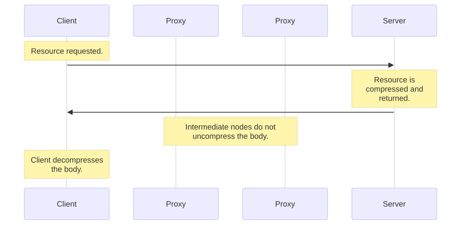
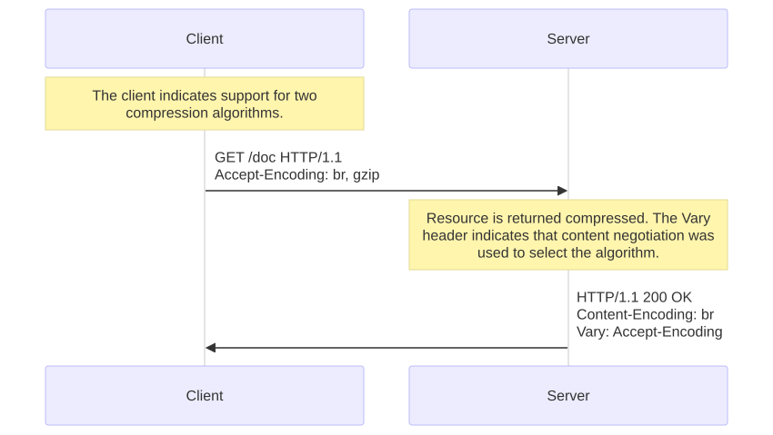
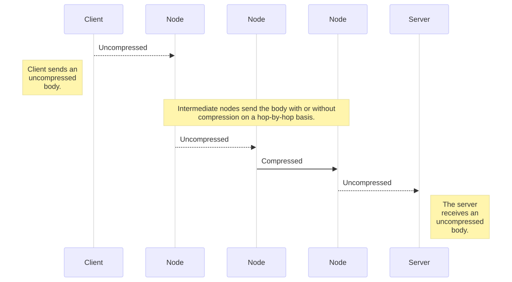
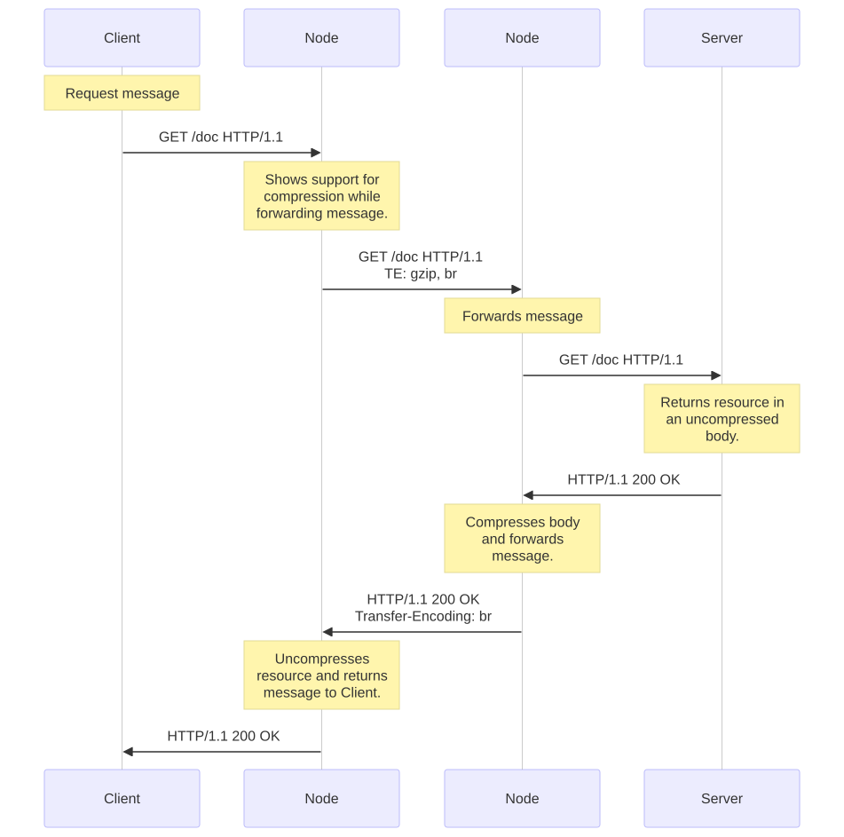

Compresión en HTTP
Original: «Compression in HTTP», de MDN Web Docs (Mozilla). Autores: colaboradores de MDN.
Licencia: CC BY-SA 2.5. Esta traducción se distribuye bajo la misma licencia. Los ejemplos de código se mantienen como en el original.
La compresión es una forma importante de mejorar el rendimiento de un sitio web. En algunos documentos, una reducción de tamaño de hasta el 70 % disminuye las necesidades de ancho de banda. Con los años, los algoritmos también se han vuelto más eficientes, y los clientes y servidores admiten algoritmos nuevos.
En la práctica, los desarrolladores web no necesitan implementar mecanismos de compresión, porque tanto los navegadores como los servidores ya los tienen implementados, pero sí deben asegurarse de que el servidor esté configurado adecuadamente. La compresión ocurre en tres niveles distintos:
- primero, algunos formatos de archivo se comprimen con métodos optimizados específicos;
- luego, puede haber compresión general en el nivel de HTTP (el recurso se transmite comprimido de extremo a extremo);
- y, por último, la compresión puede definirse en el nivel de la conexión, entre dos nodos de una conexión HTTP.
Compresión del formato de archivo
Cada tipo de datos tiene cierta redundancia, es decir, espacio desperdiciado. Si el texto suele tener hasta un 60 % de redundancia, esta proporción puede ser mucho mayor en otros medios como el audio y el video. A diferencia del texto, estos otros tipos de medios ocupan mucho espacio para almacenar sus datos, y la necesidad de optimizar el almacenamiento y recuperar espacio se hizo evidente desde muy temprano. Los ingenieros diseñaron algoritmos de compresión optimizados que usan los formatos de archivo creados con este fin específico. Los algoritmos de compresión de archivos pueden agruparse en dos grandes categorías:
- Compresión sin pérdida, en la que el ciclo de compresión y descompresión no altera los datos recuperados: coinciden byte a byte con el original. En imágenes,
gifypngusan compresión sin pérdida. - Compresión con pérdida, en la que el ciclo altera los datos originales de una manera (idealmente) imperceptible para el usuario. Los formatos de video en la web son con pérdida; el formato de imagen
jpegtambién lo es.
Algunos formatos, como webp, pueden usarse tanto con compresión sin pérdida como con pérdida, y normalmente los algoritmos con pérdida pueden configurarse para comprimir más o menos, lo que, por supuesto, da como resultado menor o mayor calidad. Para mejorar el rendimiento de un sitio web, lo ideal es comprimir lo más posible manteniendo un nivel de calidad aceptable. En el caso de las imágenes, una imagen generada por una herramienta podría no estar lo bastante optimizada para la web; se recomienda usar herramientas que compriman lo más posible con la calidad requerida. Existen numerosas herramientas especializadas en esto.
Los algoritmos de compresión con pérdida suelen ser más eficientes que los sin pérdida.
Nota: como la compresión funciona mejor con cierto tipo de archivos, comprimirlos por segunda vez normalmente no aporta nada. De hecho, suele ser contraproducente, ya que el costo adicional (los algoritmos suelen necesitar un diccionario que se suma al tamaño inicial) puede ser mayor que la ganancia extra de compresión, y el archivo resultante termina siendo más grande. No uses las dos técnicas siguientes con archivos que ya estén en un formato comprimido.
Compresión de extremo a extremo
En materia de compresión, la compresión de extremo a extremo es donde se encuentran las mayores mejoras de rendimiento de los sitios web. La compresión de extremo a extremo se refiere a la compresión del cuerpo de un mensaje que hace el servidor y que se mantiene sin cambios hasta llegar al cliente. Sean cuales sean los nodos intermedios, dejan el cuerpo intacto.

Todos los navegadores y servidores modernos la admiten, y lo único que hay que negociar es el algoritmo de compresión que se usará. Estos algoritmos están optimizados para texto. En la década de 1990, la tecnología de compresión avanzaba a gran velocidad y se agregaron numerosos algoritmos sucesivos al conjunto de opciones posibles. Hoy en día, solo dos son relevantes: gzip, el más común, y br, el nuevo contendiente.
Para elegir el algoritmo, los navegadores y servidores usan la negociación de contenido proactiva. El navegador envía una cabecera Accept-Encoding con los algoritmos que admite y su orden de preferencia; el servidor elige uno, lo usa para comprimir el cuerpo de la respuesta y usa la cabecera Content-Encoding para indicarle al navegador qué algoritmo eligió. Como se usó la negociación de contenido para elegir una representación según su codificación, el servidor debe enviar junto con esta cabecera, en la respuesta, una cabecera Vary que contenga al menos Accept-Encoding; así, las cachés podrán almacenar las distintas representaciones del recurso.

Como la compresión aporta mejoras de rendimiento significativas, se recomienda activarla para todos los archivos, excepto los que ya están comprimidos, como imágenes, archivos de audio y videos.
Apache admite la compresión y usa mod_deflate; para Nginx existe ngx_http_gzip_module; para IIS, el elemento <httpCompression>.
Transporte de diccionarios de compresión
Los formatos de compresión modernos, como la compresión Brotli y la compresión Zstandard, pueden usar diccionarios de datos de uso frecuente para aumentar aún más la compresión, en lugar de limitarse a hacer referencia a los datos que ya están dentro del archivo que se comprime. Normalmente, en las respuestas HTTP, se usa el diccionario estático predefinido incluido en ese formato (por ejemplo, el diccionario estático de Brotli está disponible en el código fuente).
El transporte de diccionarios de compresión (Compression Dictionary Transport) permite a un desarrollador indicar un recurso que puede usarse como diccionario en solicitudes futuras. Puede ser un archivo de diccionario específico o un recurso existente (por ejemplo, usar app.v1.js como diccionario al descargar app.v2.js). Esto suele mejorar la compresión y, por lo tanto, el tiempo de carga. En el ejemplo de app.vX.js, la mayor parte de la descarga consistiría solo en la diferencia entre las dos versiones, y los bytes en común podrían referenciarse desde el archivo app.v1.js original que ya se descargó.
Compresión salto a salto
La compresión salto a salto (hop-by-hop), aunque es similar a la compresión de extremo a extremo, se diferencia en un elemento fundamental: la compresión no se aplica al recurso en el servidor, creando una representación específica que luego se transmite, sino al cuerpo del mensaje entre dos nodos cualesquiera del camino entre el cliente y el servidor. Las conexiones entre nodos intermedios sucesivos pueden aplicar una compresión diferente.

Para hacerlo, HTTP usa un mecanismo similar a la negociación de contenido de la compresión de extremo a extremo: el nodo que transmite la solicitud anuncia su intención con la cabecera TE, y el otro nodo elige el método adecuado, lo aplica e indica su elección con la cabecera Transfer-Encoding.

En la práctica, la compresión salto a salto es transparente para el servidor y el cliente, y se usa muy poco. TE y Transfer-Encoding se usan sobre todo para enviar una respuesta por fragmentos (chunks), lo que permite empezar a transmitir un recurso sin conocer su longitud.
Ten en cuenta que usar Transfer-Encoding y compresión a nivel de salto es tan poco común que la mayoría de los servidores, como Apache, Nginx o IIS, no ofrecen una forma sencilla de configurarlo. Esa configuración suele hacerse a nivel del proxy.